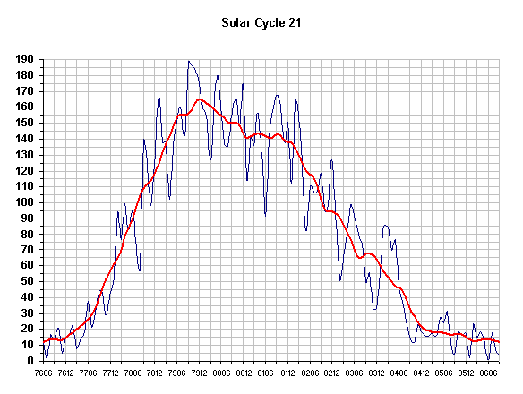

1985年の6m入感状況
[DX Report Jan-Dec.1985]
TIME:JST(UTC+0900)
Report from JA1RJU (PM95sq)
◎サイクル21の最低期に向かう1985年。サイクル22が立ち上がるまでのあと3、4年は後春、秋の
DXシーズンも期待出来ない。

01-31Jan.1985
◎特記するDXの入感はなし。
01-28.Feb.1985
◎特記するDXの入感はなし。
03.Mar.1985
VK4FXX 14:56 52.050 SSB QSO (1st DX Open on 1985)
VK4ALM 15:09 52.030 SSB QSO
28.Apr.1985
VK4JXZ 18:49 50.110 SSB QSO
XX9UT 19:25 50.110 SSB QSO (OP & QSL JA1UT)
01-31.May.1985
◎特記するDXの入感はなし。
01.Jun.1985
VS6XMT 09:27 50.112 SSB QSO
13-18.Jun.1985
◎JARL第5次訪中団として中国の北京市(BT1HHL=6/14-15)、上海市(BT4RJU=6/16-17)からHF/6m & SATを運用。
BT1HHL & BT4RJU
23.Jun.1985
VS6EL 10:32 50.112 SSB QSO
VS6XMT 10:43 50.110 SSB QSO
30.Jun.1985
◎1985 SMIRK Party Contest
07.Jul.1985
◎1985 15th 6m And Down Contest
21.Jul.1985
◎1985 CQ WPX Contest
HL5BMA 08:27 50.180 SSB QSO
21.Jul.1985
BY4AA 10:44 50.110 SSB QSO
09-13.Aug.1985
◎JA1RJU/7(Miyagi-Iwate)
19.Aug.1985
BY1PK 13:04 50.140 SSB QSO
15.Sep.1985
VK8GB 17:01 50.110 SSB QSO
26-27.Oct.1985
◎CQ WW DX Contest(1985 Fone)
◎特記する6m DXの入感はなし。
23-25.Nov.1985
◎CQ WW DX Contest(1985 CW)
◎特記する6m DXの入感はなし。
01-31.Dec.1985
◎特記する6m DXの入感はなし。
|